PTSD and War Explainer
A cute spider introduces itself as your PTSD. It is a one-minute social media explainer about the less obvious symptoms of trauma, and about the people for whom the danger hasn't ended.
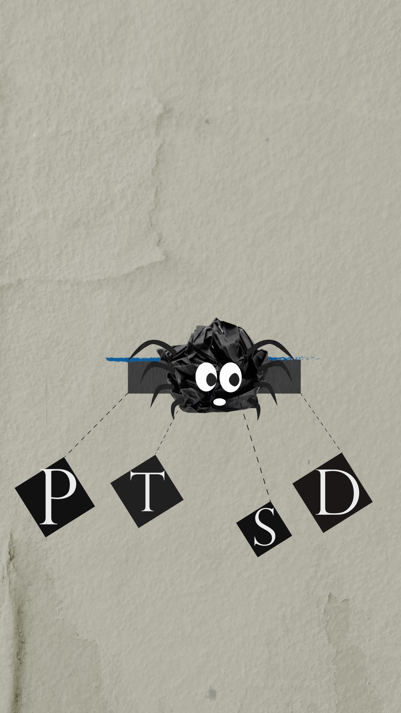
The client
The brief was written for spunout, Ireland's youth information and support platform. I compared it with Aware, Mental Health Ireland, Jigsaw and Grow. spunout was the only one whose content clearly spoke to young people, with grainy textures, gradients and bold colour on social media.
The brief
Raise awareness of PTSD among 18 to 28-year-olds in a way that feels humorous, young and approachable. Viewers should recognise themselves in the symptoms and know where to get help.
The idea
Symptom lists are vague and clinical, so the spider speaks to the viewer in specific, everyday details. Instead of "avoidant behaviour", it asks: maybe you're keeping yourself busy all the time? Questions replace statements, so the viewer answers them in their head.
A change of direction
Midway through production I rewrote the second half. The video moves from mental chaos to a real war, and the call to action changes to supporting Ukrainian defenders. Because the war in Ukraine is part of my own experience, this was the hardest part to make. It includes footage from Kharkiv on the first day of the full-scale invasion.
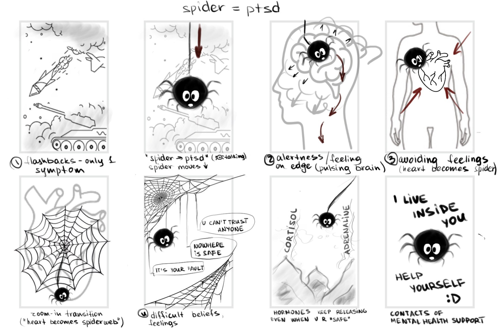
Reference
The style came from an old editing-inspiration playlist: Vox's Why we say "OK" and BBC Ideas' A simple guide to chaos theory.
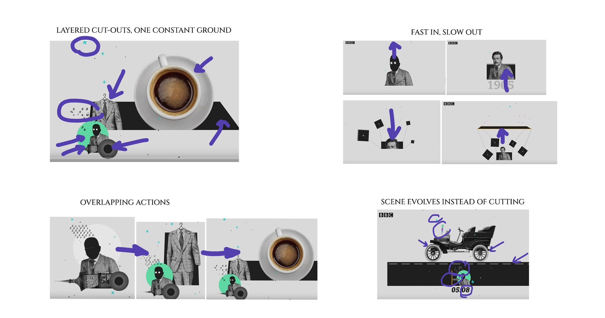
Style frames
The first assets were clean Illustrator vectors.
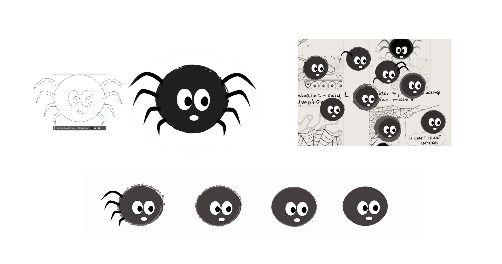
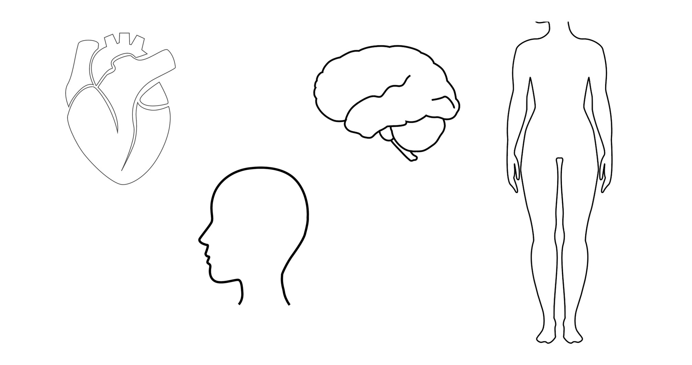
I brought them into Photoshop and layered scans, doodles, diagrams and photographs over them until the frames felt tactile and chaotic.
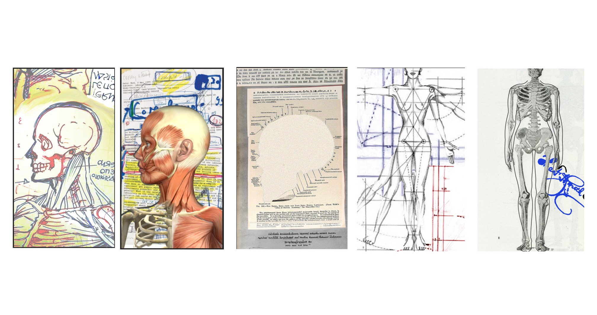
Final
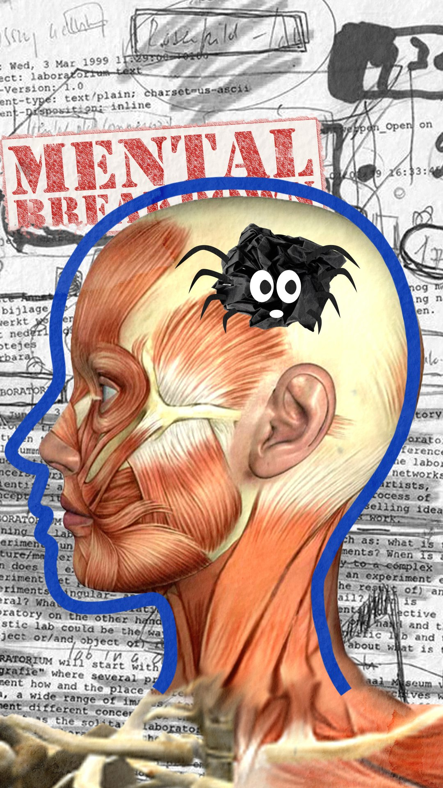
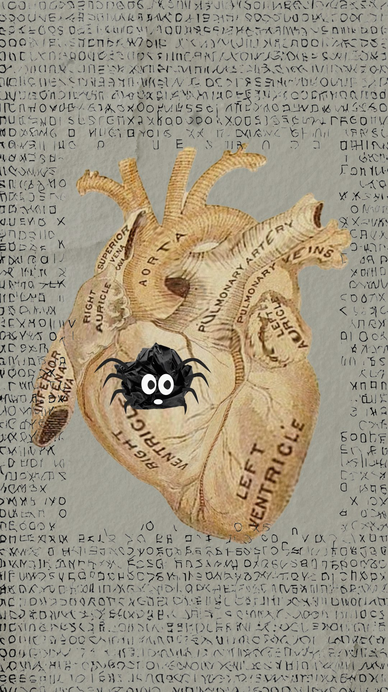
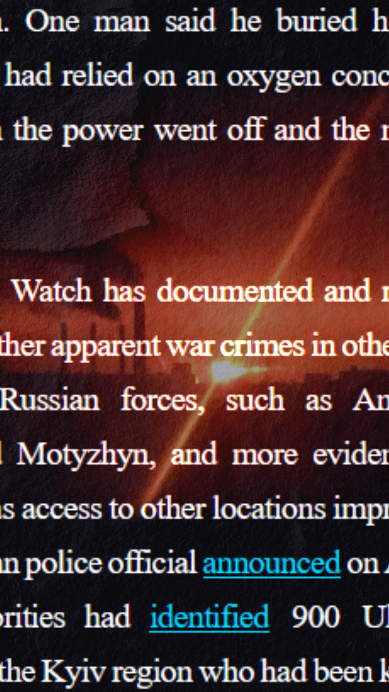
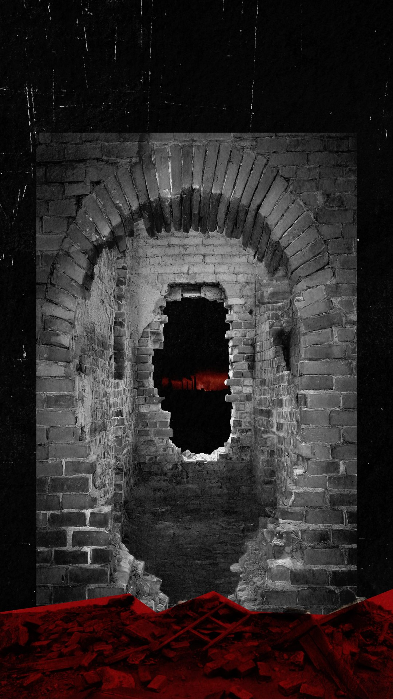
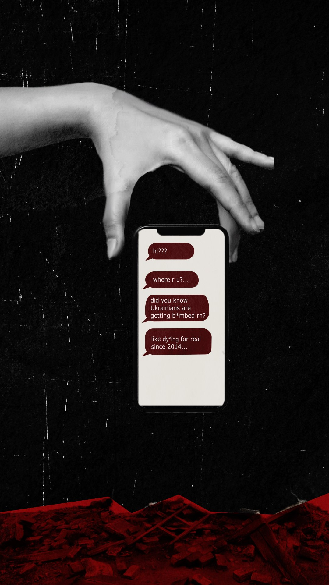
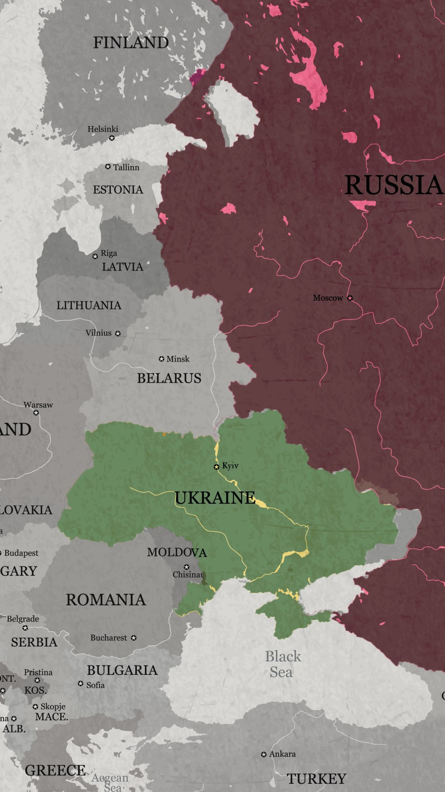
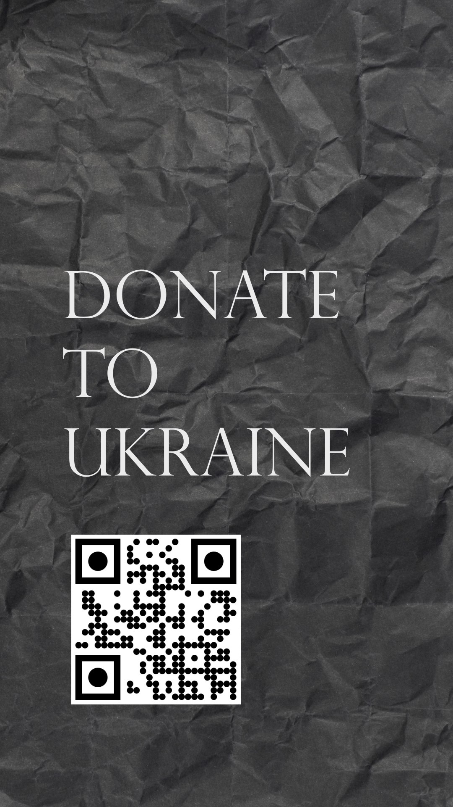
Credits
- Role
- Motion Designer (script, design, animation, edit)
- Year
- 2025
- Tools
- Illustrator, Photoshop, After Effects, ElevenReader
- Tutor
- Andrea Halphin
- Footage
- Kharkiv, Datalion
- News screenshots
- The Kyiv Independent
- Stock
- Adobe Stock, IMGBIN